용접기사 (2005-08-07 기출문제)
1과목: 기계제작법
1. 그림과 같은 고정구에 의하여 테이퍼 1/30의 검사를 할 때 A로부터 B까지의 다이얼 게이지를 이동시키면 다이얼 게이지의 지시 눈금의 차는 얼마인가?
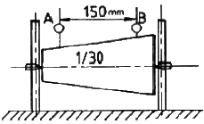
- 3.0㎜
- 3.5㎜
- 5.0㎜
- 2.5㎜
(정답률: 알수없음)

2. 빌트 업에지(Built-up edge)의 발생방지 대책으로 가장 옳은 것은?
- 절삭깊이, 이송 속도를 크게 한다.
- 바이트 윗면 경사각을 크게 하고 절삭속도를 높인다.
- 절삭 속도를 느리게 하고 절삭 깊이 및 이송 속도를 크게 하고 윤활성이 좋은 윤활유를 사용한다.
- 바이트의 윗면 경사각을 작게 한다.
(정답률: 알수없음)
3. 단면이 불규칙하고 대칭이 아닌 가공물을 척에 고정 하여 센터내기에 적합하며, 4개의 조오(jaw)가 있는 척은?
- 마그네틱 척
- 콜릿 척
- 단동 척
- 연동 척
(정답률: 알수없음)
4. 내접치차(internal geal)는 다음의 어느 공작기계로 가공하는가?
- 호빙머신
- Maag의 기어 셰이퍼
- 그라인딩 머신
- 펠로즈 기어 셰이퍼
(정답률: 알수없음)
5. 방전가공시 전극(가공공구) 재질로 사용되지 않는 것은?
- 황동
- 텅스텐
- 구리
- 알루미늄
(정답률: 알수없음)
6. 용접시에 쓰이는 정극성, 역극성에 대한 다음 사항중 틀린 것은?
- 직류용접 전원에만 한정해서 쓰는 말이다.
- 아크용접에서 쓰이는 말이다.
- 박판용접시에는 역극성으로 하는 것이 바람직하다.
- 저항용접시에는 정극성으로 하는 것이 바람직하다.
(정답률: 알수없음)
7. 목형에서 코어(core)를 주형이 지지할 수 있게 하기 위하여 코어의 소요치수보다 길게 만들고 주형에는 지지좌를 만드는데 이것을 무엇이라 하는가?
- 코어 상자
- 코어 라운딩
- 코어 프린트
- 코어 서포트
(정답률: 알수없음)
8. 주조에서 주물의 중심부까지의 응고시간 t는 주물의 체적(V)과 표면적(S)과는 어떤 관계가 있는가?
- t ∝ V/S
- t ∝ (V/S)2
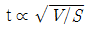
- t ∝ (V/S)3
(정답률: 알수없음)
9. 단면감소율, 다이의 각도, 윤활법, 역장력 등을 그 인자로 하는 소성가공법은?
- 압축가공
- 스피닝
- 인발가공
- 압출가공
(정답률: 알수없음)
10. 밀링 커터 중에서 외주의 정면에 절삭날이 있으며 밀링커터축에 수직인 평면을 가공할 때 쓰는 커터는?
- 메탈 소
- 정면 밀링 커터
- 총형 밀링 커터
- 플라이 커터
(정답률: 알수없음)
11. 탭 드릴의 지름을 나사산 높이의 75%로 할 때, 다음 어느 식으로 계산되는가? (단, A : 나사의 바깥지름, h : 나사산의 높이, P : 나사의 피치이다.)
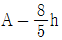
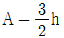
- A - P
- A - 2P
(정답률: 알수없음)
12. 공작물의 중앙에 구멍이 있어서 센터로 직접 지지할 수 없고, 또한 척(chuck)에 물려 가공할 수 없을 경우 다음 중 선택이 가능한 방법은?
- 돌리개
- 맨드릴
- 방진구
- 면판
(정답률: 알수없음)
13. 단조용 강재로서 유황의 함유량이 많을 때, 다음의 무엇과 가장 관계가 깊은가?
- 인성의 증가
- 적열취성
- 가소성 증가
- 냉간취성
(정답률: 알수없음)
14. 단조해머가 자유낙하 할 때, 단조해머의 하중 W = 10kgf, 해머의 속도 10m/s, 단조높이의 변화량 h = 3mm, 해머의 효율 n = 0.9, 중력가속도 g = 9.8 m/s2 일 때, 운동에너지(E)는 약 몇 kgf인가?
- 36
- 41
- 46
- 51
(정답률: 알수없음)
15. 플라즈마 젯 가공의 특징과 응용을 설명하는 다음 내용 중 옳지 않은 것은?
- 플라즈마 젯 절단가공은 스테인레스강, 알루미늄, 콘크리트, 내화벽돌 등을 고속으로 절단할 수 있다.
- 플라즈마 젯 절단은 수중에서도 할 수 있다.
- 플라즈마 젯은 절삭가공도 가능하며 절삭성이 좋은 재료에만 응용된다.
- 플라즈마 젯 절단을 고온 절단을 명행하면 효과적이다.
(정답률: 알수없음)
16. 코킹(Caulking)이란 어떤 작업인가?
- 강판의 가장자리를 굽히는 작업이다.
- 용기의 기밀을 완전히 하기 위하여, 리벳이음을 만든 겹판 외극에 실시하는 정 다지기 작업니다.
- 강판을 롤러 가공을 할 때 끝을 굽히는 작업니다.
- 제관이 끝난 후 기밀시험을 하기 위한 수압시험을 뜻한다.
(정답률: 알수없음)
17. 숏 피닝(shot peening)이란 어떤 작업인가?
- 가공물의 표면에 숏을 투사하여 피로강도를 증가시키기 위한 일종의 냉간 가공법이다.
- 두께가 큰 재료에 효과가 크며, 부적당한 숏 피닝은 연성을 증가시킨다.
- 숏의 재질은 냉간 주철, 주강, 강철 등이 쓰이며 대부분 환형으로 되어 있다.
- 숏 피닝 작업에는 피닝 작업과 청정작업이 있다.
(정답률: 55%)
18. 연삭비(grinding ratio)를 옳게 나타낸 것은?
- 침의 체적/ 숫돌의 감멸된 체적
- 숫돌의 감멸된 체적 / 칩의 체적
- (숫돌의 감멸 중량 / 칩의 중량) X 100%
- (칩의 중량 / 숫돌의 감멸 중량) X 100%
(정답률: 알수없음)
19. 다음 중 정밀측정실의 표준 측정 온도는?
- 20℃
- 25℃
- 15℃
- 30℃
(정답률: 알수없음)
20. 금속표면에 확산에 의한 알루미늄을 침투시키는 것을 칼로라이징(calorizing)이라 한다. 이것은 어떤 성질을 향상시키기 위한 것인가?
- 내충격성
- 전연성
- 내균열성
- 내식성
(정답률: 알수없음)
2과목: 재료역학
21. 굽힘모멘트에 의한 수직응력의 분포를 옳게 표현한 것은?
- 단면의 중립축에서 수직응력이 최대이다.
- 단면의 중립축에서 항상 0이다.
- 중립축으로부터 곡선적으로 변화한다.
- 상, 하 단면에서도 항상 0이다.
(정답률: 알수없음)
22. 그림과 같은 외팔보의 최대 처짐은?
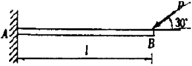
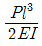
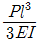
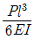
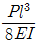
(정답률: 알수없음)
23. 지름 20mm, 길이 200mm인 연강봉이 인장하중에 의하여 길이는 0.0016mm 늘어나고 지름이 0.000⑤mm 만큼 줄었다면 이 재료의 포아송 비(poisson's ratic) μ는?
- 1/5.2
- 1/4.2
- 1/3.2
- 1/2.2
(정답률: 알수없음)
24. 1.8kN의 인장하중을 받는 연강 원형봉이 인장응력 360Mpa를 생기게 하려면 안전하게 사용할 수 있는 원형봉의 지름은? (단, 안전율 S = 4로 한다.)
- 10.1mm
- 5.⑤mm
- 15.15mm
- 20.5mm
(정답률: 알수없음)
25. 길이 L, 단면적 A, 무게 W인 막대의 상단을 고정하여 매달았다. 내부에 저장되는 단위 부피당 변형에너지를 나타내는 식은? (단, γ는 재료의 비중량, E는 탄성계수, σ는 응력)
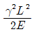
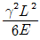
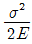
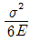
(정답률: 알수없음)
26. 바깥지름이 300mm인 평 벨트 휘일에 벨트의 유효장력 2000N이 작용되고 있다면 축에 전달되는 비틀림 모멘트는 몇 N·m인가?
- 600
- 500
- 400
- 300
(정답률: 알수없음)
27. 그림과 같은 봉에 하중 P가 작용하면 환봉에 저장되는 변형에너지(strain energy)는? (단, 응력은 각 단면에 균일하게 분포하는 것으로 가정하며, 단면적
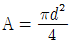
이다.)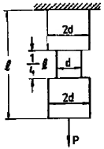
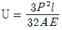
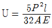
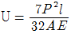
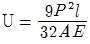
(정답률: 알수없음)
28. 그림과 같은 일단고정 타단지지보에 등분포하중이 전길이에 걸쳐 작용하고 있는 경우의 굽힘모멘트 선도로 형태가 제일 유사한 것은?
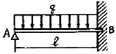
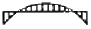
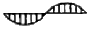
(정답률: 알수없음)
29. 짧은 강재 파이프에 P = 1000kN의 축방향 압축력이 작용할 때 파이프에 항복이 발생되지 않게 하려면 최소 바깥지름(d)은 몇 mm인가? (단, 항복응력에 대한 안전계수는 2 이며, 파이프의 두께는 바깥지름의 1/8배 이고, 강의 항복응력은 250Mpa 이다.)
- 143
- 153
- 163
- 173
(정답률: 알수없음)
30. 그림과 같이 반원부재가 하중 P가 작용할 때 C 점을 통하는 단면에서의 내부 모멘트는?
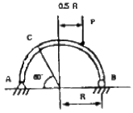
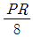
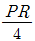
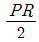
- PR
(정답률: 알수없음)
31. 그림과 같은 보에서 발생하는 최대굽힘 모멘트는?
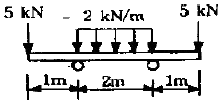
- 2 kN·m
- 5 kN·m
- 7 kN·m
- 10 kN·m
(정답률: 알수없음)
32. 직경이 d이고 길이가 L인 강봉에 인장하중 P가 작용하고 있다. 강봉의 탄성계수가 E라 하면 강봉의 전체 탄성에너지 U는 얼마인가?
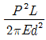
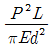
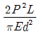
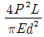
(정답률: 알수없음)
33. 그림의 경우 보 중앙의 처짐이 옳은 것은?
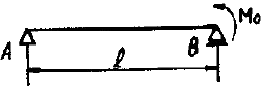
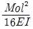
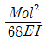
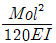
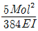
(정답률: 알수없음)
34. 그림과 같은 스트레인 (strain rosette)에서 εa=100×10-6, εb=200×10-6, εc=900×10-6 이때 주변형률의 크기는?
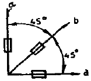
- ε1=-10-3, ε2=0
- ε1=0, ε2=-10×10-3
- ε1=-10×10-3, ε2=0
- ε1=10-3, ε2=0
(정답률: 알수없음)
35. 두께 8mm인 가죽 벨트가 1200rpm으로 회전하는 d=400mm의 풀리에 감겨져 있을 때 원심력에 의해 벨트 속에 발생하는 인장응력은 몇 kPa인가? (단, 가죽의 비중량 γ = 9810 N/m2 이다.)
- 632
- 7700
- 879
- 5778
(정답률: 알수없음)
36. 그림과 같은 길이 3m의 원형 단면의 연강봉 기둥에 P = 100kN의 축압축 하중을 작용하려고 한다. 안전율은 5로 하고 오일러(Euler)의 공식을 사용하면 이 기둥의 지름은 몇 cm가 옳은가?
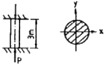
- 5.77
- 4.71
- 3.86
- 2.64
(정답률: 알수없음)
37. 그림에 표시한 단순 지지보에서의 최대 처짐량은?
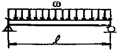
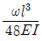
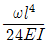
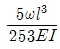
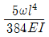
(정답률: 알수없음)
38. 반경 r, 압력 P, 두께 t인 실린더형 압력용기에서 발생되는 절대 최대 전단응력 (3차원 응력상태에서의 최대 전단응력)읠 크기는?
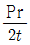
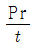
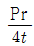
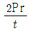
(정답률: 알수없음)
39. 그림과 같은 계단 단면의 중실 원형축의 양단을 고정하고 계단 단면부에 비틀림 모멘트 T가 작용할 경우 지름 D1과 D2의 축에 작용하는 비틀림 모멘트의 비T1/T2은? (단, D1=8om, D2=4om, l1=40om, l2=10om)
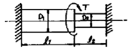
- 2
- 4
- 6
- 8
(정답률: 알수없음)
40. 원형단면축이 비틀림에 의한 전단응력 τ 와 τ 의 2배크기의 굽힘에 의한 수직 응력 σb를 동시에 받고 있을 때 최대 전단응력은 수직응력의 몇 배인가?
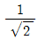
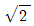
(정답률: 알수없음)
3과목: 용접야금
41. 용접 전류율 200(A), 아크 전압율 25(V), 단위 길이 1(cm) 당의 용접 입열이 20000(joule/cm)이라면 용접 속도는 얼마(cm/min)로 해야 되겠는가?
- 15
- 25
- 200
- 20000
(정답률: 알수없음)
42. 강의 A1 변태내용을 다음과 같이 표시했다. 이 중 맞는 것은?
- Pearlite ⇆ Cementite
- Austenite ⇆ Cementite
- Austenite ⇆ Pearlite
- Pearlite ⇆ Ferrite
(정답률: 알수없음)
43. 금속강화법에 가장 해당치 않다고 생각되는 것은?
- 합금원소의 고용 강화
- 가공에 의한 경화
- 열처리에 의한 강화
- 용융에 의한 강화
(정답률: 알수없음)
44. 강 용접부의 노치취성(notch brittleness)을 잘생기지 않게 하는 원소가 아닌 것은?
- Cr
- Mn
- Ni
- Ti
(정답률: 80%)
45. 다음 중 심냉처리(sub-zero quenching)에 관한 설명중 옳은 것은 어느 것인가?
- 담금질 또는 불림감을 A1점 이하로 가열하여, 소정시간 유지한 다음 적당히 냉각하는 처리이다.
- 강의 연화, 내부응력의 제거를 목적으로 하는 처리이다.
- 강을 A3점 이상 30℃의 온도로 가열하고, 소정시간 유지한 다음 조용히 대기 중에서 방치하여 냉각하는 처리이다.
- 담금질 할 때에 잔류하는 오스테나이트를 마텐자이트화 하기 위하여 보통의 담금질을 한 다음, 또 실온이하의 온도로 냉각하는 처리를 말한다.
(정답률: 알수없음)
46. 용접전류가 100A, 아크전압이 25V, 용접속도가 10cm/min 일 때 용접기리 1cm 당의 용접 입열은 얼마인가?
- 15000 joule/cm
- 20000 joule/cm
- 25000 joule/cm
- 30000 joule/cm
(정답률: 알수없음)
47. 알루미늄 용접이 다른 재료에 비해 용접이 곤란한 문제점을 열거하였다. 이것에 속하지 않는 것은?
- 온도 확산율이 크기 때문에 융점이 낮아도 국부가열이 곤란하다.
- 열팽창이 크기 때문에 용접변형이나 잔류응력이 발생하기 쉽다.
- 수소를 흡수하는 성질이 있으므로 기공이 생기기 쉽다.
- 탄소가 많기 때문에 용접부에 기공이 생기기 쉽다.
(정답률: 알수없음)
48. 다음은 용접결함과 그것을 지배하는 인자에 대해서 나타낸 것이다. 옳은 것은?
- 고온균열 - 수분
- 저온균열 - 황(S)
- 비이드 밑 균열 - 산소
- 지연균열 - 확산성수소
(정답률: 알수없음)
49. 순금속의 융점에서의 자유도는?
- 0
- 1
- 2
- 3
(정답률: 알수없음)
50. 다음 라멜라테어(lamellar tear)에 관한 설명이다. 옳은 것은?
- 압연방향과 평행하게 전파된다.
- 용착금속 내에서 발생 전파한다.
- 주로 엷은 판에서 발생한다.
- 확산성 수소와는 관련이 없다.
(정답률: 알수없음)
51. HAZ의 재질을 향상시키기 위하여 흔히 취하는 옳은 방법은?
- 특수한 용가재 사용
- 용접부 피닝
- 용접부 냉각속도 증가
- 용접부 예열과 후열
(정답률: 알수없음)
52. 용접부의 응력 풀림 열처리는 일반적으로 어느정도 온도 범위에서 하는 것이 가장 적당한가? (단, 재질은 강재이다.)
- 150 ~ 200℃
- 200 ~ 250℃
- 300 ~ 400℃
- 600 ~ 650℃
(정답률: 알수없음)
53. 금속의 응고순서가 맞는 것은?
- 결정핵 발생 - 결정의 성장 - 결정계 형성
- 결정핵 발생 - 결정계 형성 - 결정의 성장
- 결정계 형성 - 결정핵 발생 - 결정의 성장
- 결정의 성장 - 결정핵 발생 - 결정계 형성
(정답률: 알수없음)
54. 용접부에 혼입되는 수소와 가장 관련이 적은 용접 결함은?
- 저온균열
- 기공
- 은점
- 고온균열
(정답률: 알수없음)
55. 연강을 0℃ 이하에서 용접할 경우 이음의 양쪽을 약 100mm 폭이 되게 하여 다음 중 몇 ℃ 정도로 예열하면 좋은가?
- 40 ~70℃
- 80 ~ 100℃
- 100 ~200℃
- 200℃이상
(정답률: 알수없음)
56. 아세틸렌의 완전 연소의 화학식은?
- C3H8+5O2
- C2H2+2O2
- CH4+2O2
(정답률: 알수없음)
57. 알루미늄 합금의 열처리 법에 해당되지 않는 것은?
- 마퀜칭
- 용체화 처리
- 인공 시효처리
- 풀림
(정답률: 알수없음)
58. 상온에서 강자성체이며 연성은 크로 인장강도는 작으며 파면이 백색을 띠고 있는 강의 표준조직은?
- 페라이트
- 펄라이트
- 시멘타이트
- 오스테나이트
(정답률: 알수없음)
59. 언더 비드 균열은 비드에 직각으로 생기는 균열이다. 다음 중 어떤 강종에서 가장 많이 발생하는가?
- 저합금 고장력강
- 저합금 저장력강
- 고합금 고장력강
- 고합금 저장력강
(정답률: 알수없음)
60. 저합금 고장력강의 서브머지드(잠호) 용접시 발생하는 고온 균열을 방지하기 위한 방법 중 옳지 않은 것은?
- 전류의 세기를 낮춤
- S함량이 낮은 재료를 사용
- 비드의 폭과 용입 깊이 비율을 개선함
- 예열을 반드시 실시함
(정답률: 알수없음)
4과목: 용접구조설계
61. 다음 경도계 중 반발높이로 경도값을 표시하는 경도계는?
- 브리넬 경도계
- 로크웰 경도계
- 비커스 경도계
- 쇼어 경도계
(정답률: 알수없음)
62. 용접변형을 경감하기 위한 용접법 중 비석법을 바르게 설명한 것은?
- 두꺼운 판을 용접할 때 층을 쌓아 올리면서 용접하는 방법
- 용접부에 물을 적신 석면, 천 등을 올려놓고 용접하는 방법
- 용접선이 길 경우에 용접비드를 건너 뛰어서 놓은 방법
- 모재의 보다 찬 부분을 선택하여 비드를 놓는 방법
(정답률: 알수없음)
63. 가접(tack weld)의 일반적 주의사항이 아닌 것은?
- 공작상 문제가 되는 곳은 피하는 것이 좋다.
- 본 용접보다도 약간 가는 용접봉을 사용한다.
- 루트 간격이 소정의 치수가 되도록 유의하여야 한다.
- 강도상 중요한 이음일수록 가접을 하는 것이 좋다.
(정답률: 알수없음)
64. 각의 용접에서 열영향부가 급랭 경화하여 강도는 상승하나 연성은 저하하는 경향이 있으며 이 열영향부의 3가지 영역에 해당되지 않는 것은?
- 인화역
- 입상역
- 세입역
- 조입역
(정답률: 알수없음)
65. 9% 니켈량을 급냉시킬 때 잔류응력이 최대가 되는 최고 가열온도는 몇 ℃인가?
- 400
- 700
- 900
- 1000
(정답률: 알수없음)
66. 용접작업의 기본 기호에서 다음 중 3개는 그 표시가 같은데 1개는 다른 기호에 해당하는 것은?
- 점용접
- 심용접
- 플러그 용접
- 프로젝션 용접
(정답률: 알수없음)
67. 용접시험 중 용접성(weldability) 시험에 해당되지 않는 것은?
- 노치취성 시험
- 용접연성 시험
- 용접균열 시험
- 천공 시험
(정답률: 알수없음)
68. 그림과 같은 맞대기 용접부의 목두께는?
- t2
- t1
- t2-t1
- t2-2t1
(정답률: 알수없음)
69. 용접 균열 시험법 중에서 고온 균열 시험법은 다음중 어느 것인가?
- 피이스코 균열 시험법
- 크랜휘일드 균열 시험법
- CTS 균열 시험법
- 슬릿형 균열 시험법
(정답률: 알수없음)
70. 용접이음 강도 계산에서 안전율을 n, 허용응력을 σω라면 용착금속의 인장강도 σ는 어떻게 표시되는가?
(정답률: 알수없음)
71. 다음 그림과 같이 강판의 두께 25mm, 인장하중이 8,600kgf을 작용시키고자 하는 겹치기 용접이음을 하고자 한다. 용접부·허용응력을 7kgf/mm2라 할 때 필요한 강판의 용접길이는?
- 20.1㎜
- 30.4㎜
- 34.7㎜
- 42.9㎜
(정답률: 알수없음)
72. 용접 열영향부 폭에 대한 기술이다. 옳은 것은?
- 열영향부 폭은 최고온도 분포를 바꿈으로써 조절할 수 없다.
- 열영향부 폭은 용접입열의 에너지 밀도가 클수록 넓어진다.
- 열영향부 폭은 용접입열의 에너지 밀도가 클수록 좁아진다.
- 모든 열영향부는 온도 변화의 영향을 받지 않는다.
(정답률: 알수없음)
73. 용접봉의 소요량에서 용접봉의 가격을 올바르게 나타낸 식은?
- 용착율 × 용접봉 단가
- 사용율 × 용접봉 단가
- 용접봉 사용량 × 용접봉 단가
- 용접봉 사용율 × 용착율 × 용접봉 단가
(정답률: 알수없음)
74. 잔류응력에 영향을 주는 요소가 아닌 것은?
- 이음형상
- 용접입열
- 용접순서
- 용가재
(정답률: 알수없음)
75. 금속의 용접에서 열확산도가 다음 중 가장 큰 것은?
- W
- Cu
- Fe
- Mo
(정답률: 알수없음)
76. 용접의 홈 접합시 용접봉의 소요중량을 W, 용착강의 중량을 S, 총 용접봉 소모량을 L이라면, 약산식에 의해 W를 구할 때 옳은 것은?(단, W와 S의 단위는 1b이다.)
(정답률: 알수없음)
77. 용접구조물의 설계에서 용접결함을 없애기 위해 고려할 사항 중 가장 거리가 먼 것은?
- 잔류응력을 적게 한다.
- 현장 용접이 많아지도록 작업한다.
- 피로 파괴에 대한 대책을 세운다.
- 용접성이 양호한 재료를 선택한다.
(정답률: 알수없음)
78. 용접부에 발생하는 인장응력은 몇 kgf/mm2인가? (단, h=10㎜, l=150㎜이다.)
- 1.7
- 3.1
- 5.2
- 7.8
(정답률: 알수없음)
79. 용접지그의 선택기준 중 틀린 것은?
- 용접재를 튼튼히 잡아주고, 변형을 막아줄 수 있는 힘을 가져야 한다.
- 용접자세가 쉽도록 되어야 하며, 쉽게 움직일 수 없어야 한다.
- 용접 물체의 부착 및 제거가 간편해야 한다.
- 청소가 편리해야 한다.
(정답률: 알수없음)
80. 모재가 가스절단이나, 용접에 의해 가열 될 때 굴곡면에 레미네이션이 발생할 수 있다. 다음 중 레미네이션 발생과 가장 관계가 깊은 강재중의 성분은?
- 탄소(C)
- 규소(Si)
- 망간(Mn)
- 황(S)
(정답률: 알수없음)
5과목: 용접일반 및 안전관리
81. 용접작업 중 X선 발생시 그 방호가 요구되는 것은?
- 일렉트로 슬래그 용접
- 전자빔 용접
- 초음파 용접
- 플라즈마 아크 용접
(정답률: 알수없음)
82. 연각용 피복아크 용접봉의 내균열성을 비교한 것중 가장 큰 것부터 나열된 것은?
- 저소수계 - 일미나이트계 - 티탄계
- 티탄계 - 저소수계 - 고산화철계
- 일미나이트계 - 저소수계 - 티탄계
- 저소수계 - 티탄계 - 일미나이트계
(정답률: 알수없음)
83. 피복금속 아크용접보다 강한 전류를 사용하여 연강, 특수강 및 일부 비철금속 등의 두꺼운 판도 단층으로 용접할 수 있는 것은? (단, 아크는 물론 발생하는 가스도 볼 수 없음)
- TIG용접
- MIG용접
- 탄산가스아크용접
- 서브머지드아크용접
(정답률: 50%)
84. 정격 전류가 300A인 용접기를 실제전류 220A로 사용하는 경우의 허용 사용률은 얼마인가? (단, 정격 사용률은 40%이다.)
- 67.1%
- 74.4%
- 85.5%
- 92.7%
(정답률: 알수없음)
85. 서브머지드 아크용접 장치 중 헤드 부분에 속하지 않는 것은?
- 전압 제어장치
- 가이드 레일
- 콘택트 조오
- 심선 송급장치
(정답률: 알수없음)
86. 전기 아크 빛에 의하여 눈에 가벼운 염증이 있는 경우의 응급조치로 가장 적당한 것은?
- 비눗물로 찜질한다.
- 찬물로 찜질한다.
- 그리스를 눈 주위에 바른다.
- 상사에게 보고한다.
(정답률: 알수없음)
87. 탄소강 맞대기 이음의 1층에서 수축에 미치는 변태 팽창량이 가장 큰 것은?
- 연강
- 고장력강(HT 60)
- 9% Ni - 강
- 고장력강(HT 80)
(정답률: 알수없음)
88. 피복아크용접봉 E4301을 일본에서는 E 대신에 무엇을 사용하나?
- A4301
- C4301
- D4301
- J4301
(정답률: 알수없음)
89. 교류용접기의 특징이 아닌 것은?
- 전류의 방향이 바뀌므로 아크가 불안정하다.
- 취급하기 쉽고 고장이 적다.
- 소음이 적다.
- 무부하 전압이 직류보다 낮다.
(정답률: 알수없음)
90. 브레이징(Brazing) 용접은 저온 용가재를 사용하여 모재를 녹이지 않고 용가재만 녹여 용접을 이행하는 방식인데 섭씨 몇도 이상에서 용접을 이행하는 방법인가?
- 350℃
- 400℃
- 450℃
- 420℃
(정답률: 알수없음)
91. AW -400 용접기의 표시에서 400 이란 무슨 뜻인가?
- 1차 최대전류
- 정격 2차 전류
- 최고 2차 무부하 전압
- 정격 사용율
(정답률: 알수없음)
92. 일정한 광물을 혼합하여 300~500℃ 정도로 가열하여 제조한 잠호용접용 플럭스의 종류는?
- 용융형 플럭스
- 소성형 플럭스
- 고온소결형 플럭스
- 저온소결형 플럭스
(정답률: 알수없음)
93. 용접작업 중 감전의 위험을 방지하기 위한 기기는?
- 핫 스타트 아크장치
- 자동장치
- 원격제어장치
- 전격방지기
(정답률: 알수없음)
94. 피복아크용접에서 내마모용 덧붙임 용접봉으로 밑깔기(하성) 용접을 하는 가장 큰 이유는?
- 본래의 성능을 발휘시키기 위하여
- 용접부의 최고경도를 강화시키기 위하여
- 용접부의 천이구역을 좁게 하기 위하여
- 모재와 용착금속을 격리시키기 위하여
(정답률: 알수없음)
95. 일반적인 아크용접봉의 피복제의 적용 중 틀린 사항은?
- 알칼리성의 분위기를 만들어 대기 중의 산소의 침입을 방지한다.
- 용접금속에 적당한 합금원소의 첨가역할을 한다.
- 용융점이 낮은 점성이 가벼운 슬랙을 만든다.
- 용접금속의 탈산 정련작용을 한다.
(정답률: 알수없음)
96. 저수소계 용접봉은 건조온도를 어느 정도 건조해서 사용해야 결함이 없는가?
- 70 ~ 100℃
- 300 ~ 350℃
- 70℃ 미만
- 100℃
(정답률: 알수없음)
97. 케이블 커넥터와 용접기의 단자에 사용되는 재료는?
- 아연
- 강철
- 구리
- 납
(정답률: 알수없음)
98. 피복아크 용접시 아크 쏠림 방지책이 아닌 것은?
- 정극성을 역극성으로 한다.
- 아크 길이를 짧게 유지한다.
- 접지점 2개를 연결한다.
- 용접봉 끝을 아크 쏠림 반대 방향으로 기울인다.
(정답률: 알수없음)
99. 접합부를 가열하여 그 재료의 재결정온도 이상이 되면, 축방향에서 압축압력을 가해 접합하는 방법은?
- 가스 압접
- 단접
- 마찰 용접
- 테르밋 용접
(정답률: 알수없음)
100. 산업용 로봇에서 일반적인 분류에 의한 로봇이 아닌 것은?
- 원격 조정 로봇
- 관절형 로봇
- 시퀀스 로봇
- 플레이 백 로봇
(정답률: 알수없음)